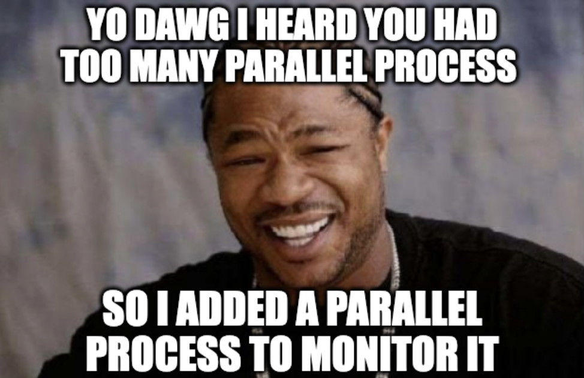
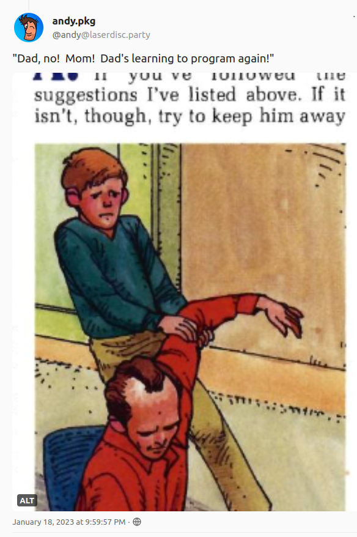

Stephen Oladele from Neptune.ai wrote an article where my work was used in one of the case studies.
An interview where I share my thoughts on deploying machine learning and MLOps.
I discuss the MLOps architecture I’ve build with my team at Greensteam.